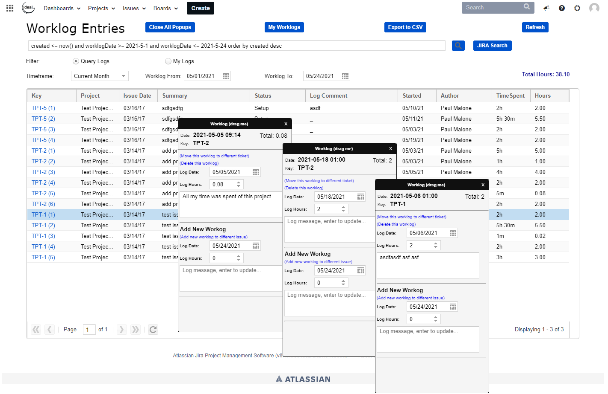
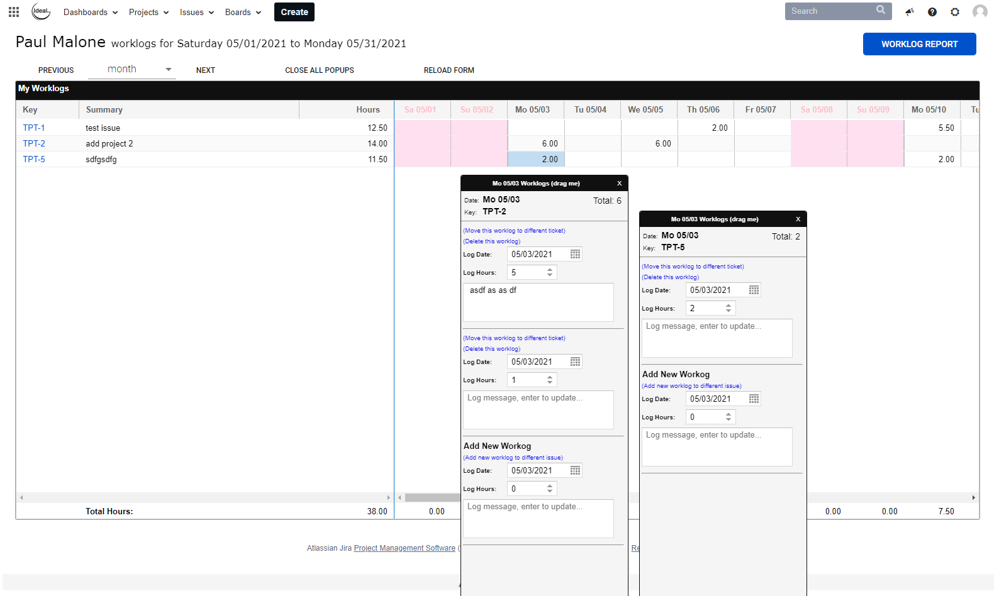

Ideal Worklogs for Jira
Ideal Worklogs for Jira is an Atlassian Jira plugin that provides two forms that simplify time entry (worklogs) against Jira Issues. Both forms provide user entry popups for managing time.
Atlassian Marketplace Listing
Jira Time Tracking
Jira Issues natively support time tracking. Ideal Worklogs provides several dynamic forms that simplify time entry management and reporting. Using these tools Jira time tracking can replace standalone time tracking systems. Ideal Federal Technologies is willing and happy to help our clients get set up using Jira for time management. Ideal Worklogs is available for Cloud, Server and Datacenter. Please use the Marketplace link above for Cloud and contact us for Server or Datacenter.
Ideal Worklog Report
The Worklogs Report is a query based form for displaying worklog entries and editing those entries. Features:
- * Search utility
- * Calculated Total Hours
- * Worklog Editor
- * Export to CSV

Ideal My Worklogs
The My Worklogs form is a calendar based form for displaying worklog entries and editing those entries. Features:
- * Calendar Display
- * Timeframes: Week, Month, 4 weeks
- * Worklog Editor
- * Dynamic Total Calculator

Managing the Forms
Both My Worklogs and the Worklogs Report are built using Ideal Forms for Jira. As such you have access to the forms designer from 'manage applications' in Jira. However, please note the following.
If you are using the server or data center versions of Jira your configuration will reset to the default after a server restart or plugin enable event. If you want to permanently change your configuration please consider installing Ideal Forms for Jira and install the Form Group from our library.
If you are using the cloud version of Jira, your configuration will persist. You can choose to apply the default version or other IFT version from your manage application screen.